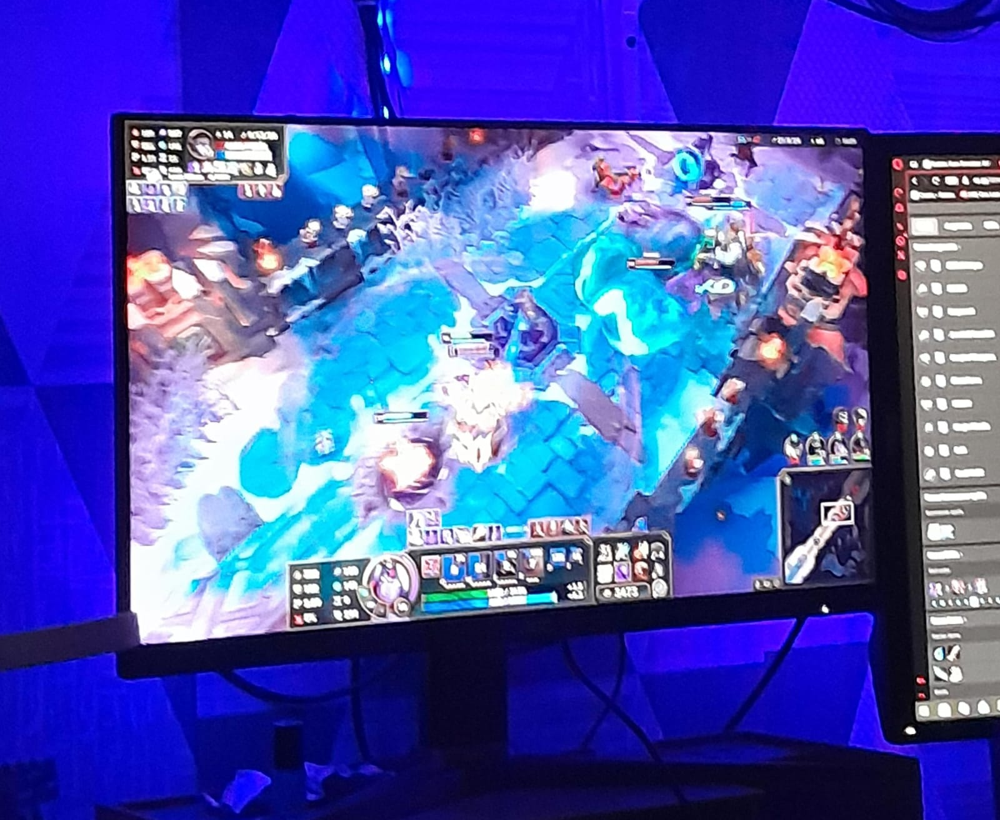

BARUGaming
Bermain game adalah hobi favorit saya. Saya biasanya bermain saat memiliki waktu luang.
Saya suka mencoba berbagai jenis game yang menarik.
Bermain bersama teman membuat permainan lebih seru.
Setiap game mempunyai tantangan yang berbeda.
Saya juga suka mempelajari cara bermain game baru.
Menurut saya, game bisa menjadi hiburan setelah belajar.
Saya tetap mengatur waktu agar hobi dan tugas sekolah seimbang.